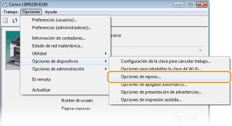
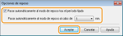

0KXF-00L
La función del modo de reposo reduce la cantidad de energía que consume el equipo deteniendo temporalmente algunas operaciones internas. Puede configurar el equipo para que entre automáticamente en modo de reposo si permanece inactivo durante un periodo de tiempo determinado. La configuración predeterminada de fábrica para la cantidad de tiempo que debe transcurrir hasta que el equipo pase a modo de reposo es de un minuto. Recomendamos utilizar esta configuración para ahorrar la mayor cantidad de energía posible. Si desea modificar el tiempo que debe transcurrir hasta que el equipo entre en modo de reposo, siga el procedimiento que se indica a continuación en la Ventana Estado de la impresora.
|
|
|
Situaciones en las que el equipo no entra en modo de reposo
El equipo no entra en modo de reposo, entre otras situaciones, cuando está recibiendo datos de impresión desde un ordenador, cuando hay alguna tapa abierta o cuando falta por cargar algún cartucho de tóner.
En función del entorno que utilice, el equipo no entrará en el modo de reposo cuando esté conectado a una red inalámbrica.
|
1
Seleccione el equipo haciendo clic en  en la bandeja del sistema.
en la bandeja del sistema.
en la bandeja del sistema.
2
Seleccione [Opciones]  [Opciones de dispositivos] [Opciones de reposo].
[Opciones de dispositivos] [Opciones de reposo].

3
Configure el modo de reposo y haga clic en [Aceptar].

[Pasar automáticamente al modo de reposo tras el período fijado]
Marque la casilla de verificación para pasar al modo de reposo una vez haya transcurrido el tiempo especificado con [Pasar automáticamente al modo de reposo al cabo de].
Marque la casilla de verificación para pasar al modo de reposo una vez haya transcurrido el tiempo especificado con [Pasar automáticamente al modo de reposo al cabo de].
[Pasar automáticamente al modo de reposo al cabo de]
Especifique el periodo de tiempo tras el cual el equipo debe pasar al modo de reposo. Puede elegir entre 1 y 180 minutos.
Especifique el periodo de tiempo tras el cual el equipo debe pasar al modo de reposo. Puede elegir entre 1 y 180 minutos.